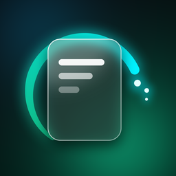

Privacy Policy
SnapPurge AI · Effective October 8, 2026
Data Not Collected
SnapPurge ("the app") helps you find and delete temporary screenshots such as receipts, one-time codes, Wi-Fi and tracking shots, and old clutter. This policy explains what happens to your information. The short version: your photos are processed on your iPhone only, and we collect nothing.
Photos stay on your iPhone
- With your permission, the app reads the screenshots in your photo library using Apple's Photos framework.
- Text in each screenshot is recognized on the device with Apple's Vision framework. Screenshots, their text and the results are never uploaded, shared, or sent to us or to anyone else.
- The app does not download photos stored only in iCloud; it works with what is already on the device.
- Recognized text and thumbnails are kept in memory while the app runs and are discarded when it closes.
- The app deletes a screenshot only when you choose to, and iOS asks you to confirm every deletion. Deleted items go to Recently Deleted in Photos, where you can recover them for 30 days.
What we collect
Nothing. The app has no account, no analytics, no advertising, no tracking, no crash-reporting SDK and no third-party code. It has no server of its own and makes no network requests other than Apple's own StoreKit purchase services.
What is stored on your device
The app stores one small counter on your iPhone: how many free deletes you have used. It never leaves the device and is removed when you delete the app.
Purchases
Subscriptions and the lifetime unlock are sold and processed by Apple through the App Store. Apple handles your payment details under Apple's Privacy Policy. We never see your name, Apple ID, email or payment information. The app asks Apple's StoreKit, on the device, whether you have an active purchase.
Children
The app is not directed at children and collects no data from anyone, including children under 13.
Your choices
- You can allow full or limited Photos access, or revoke it at any time in Settings > Privacy & Security > Photos > SnapPurge.
- Because we hold no data about you, there is nothing to access, export or delete on our side. Deleting the app removes everything it stored on your device.
Changes
If this policy changes, the new version will be posted on this page with a new effective date. If the app ever starts collecting data, this page and the App Store privacy label will say so before that version is released.
Contact
Questions about privacy: albazirafal859@gmail.com